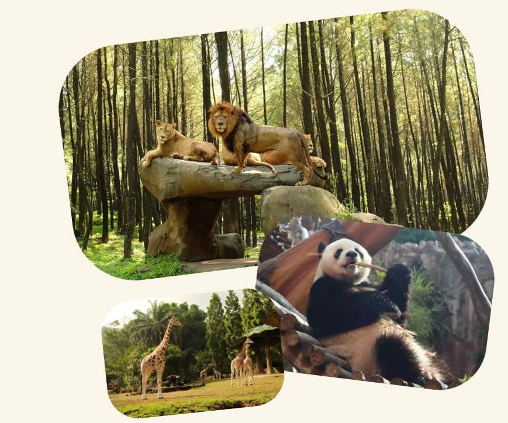
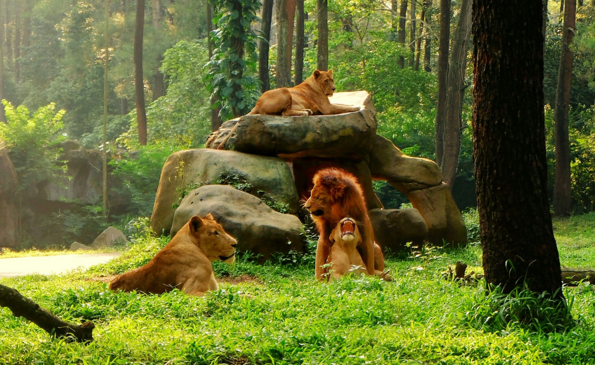
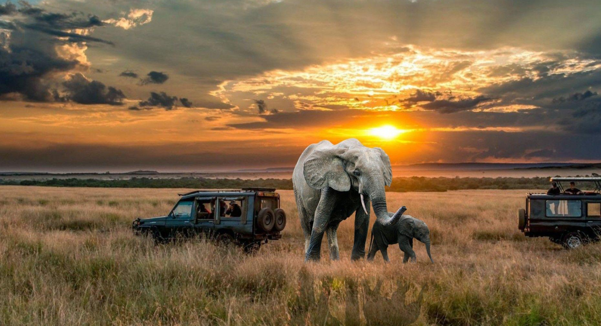
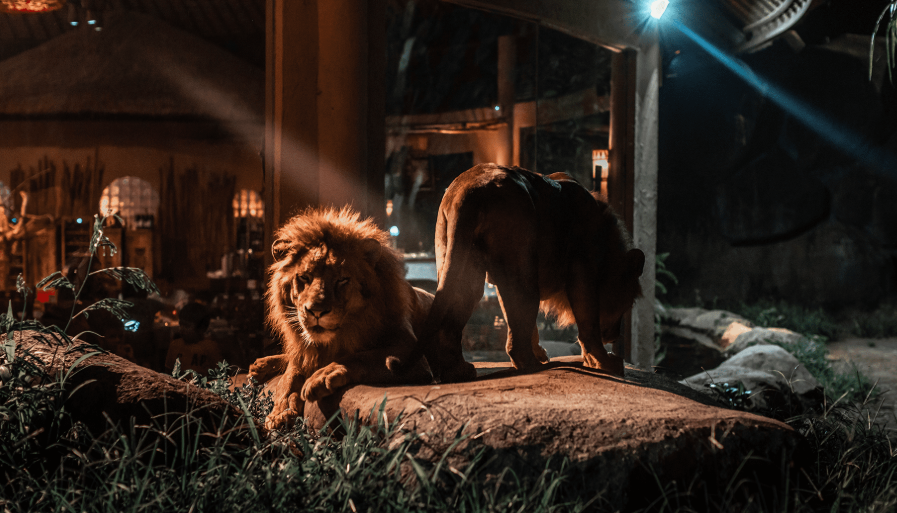
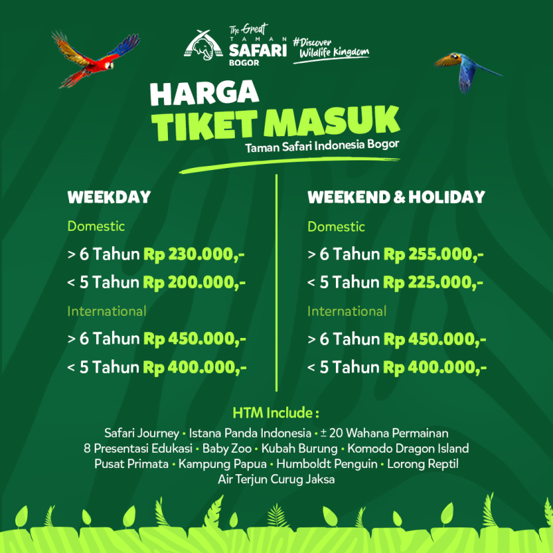
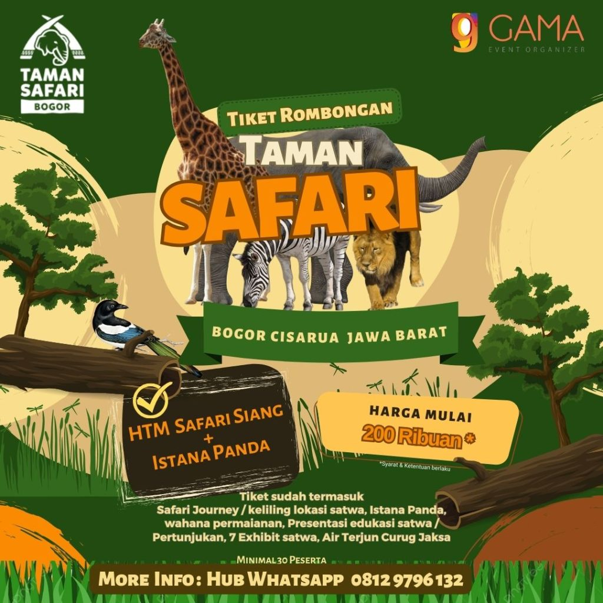
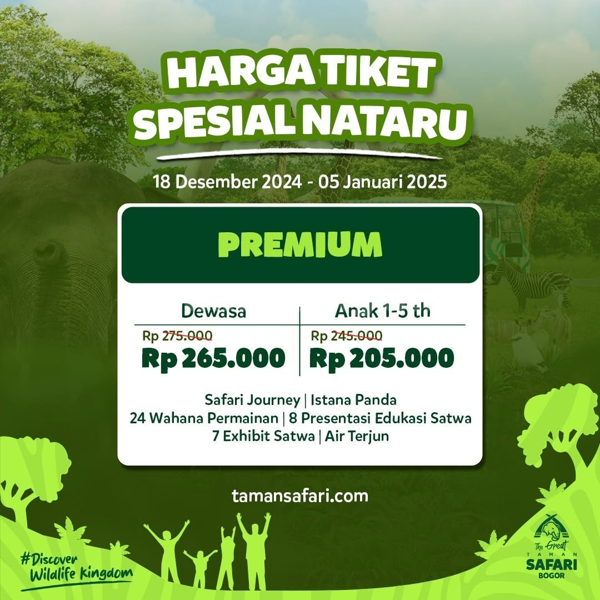

Taman Safari Bogor adalah pionir dalam berdirinya taman satwa Indonesia. Didirikan pada tahun 1981 dengan luas tanah mencapai 55 hektar dan diresmikan sebagai objek wisata nasional pada 16 Maret 1990. Sebagai salah satu taman satwa terkemuka di Indonesia, Taman Safari Bogor memiliki koleksi lebih dari 8.700 satwa dari 400 spesies, termasuk sepasang giant panda, Cai Tao dan Hu Chun, yang didatangkan dari China.
Taman Safari Bogor tidak hanya menjadi pusat konservasi dan riset satwa, tetapi juga menawarkan beragam fasilitas edukasi dan rekreasi. Pengunjung dapat menikmati aktivitas seperti safari malam, memberi makan satwa, tracking, camping, dan wisata ke Curug Jaksa. Dilengkapi 25 wahana permainan, 11 restoran, dan lebih dari 20 pertunjukan, taman ini juga memiliki Safari Resort dengan 106 kamar dalam enam tipe akomodasi, menawarkan pengalaman unik untuk seluruh keluarga.
Fasilitas tambahan termasuk Rumah Sakit Hewan, area konservasi, dan sistem pengelolaan sampah terintegrasi (Integrated Waste Management – IWM). Taman Safari Bogor juga memiliki area pengelolaan kotoran gajah yang dikenal sebagai Paper Poo, di mana kotoran gajah diolah menjadi produk kertas yang ramah lingkungan, mendukung upaya keberlanjutan dan konservasi.
Rasakan Pengalaman Luar biasa dekat dengan alam liar dalam program Safari Siang. Berpetualang selama 45 menit menggunakan kendaraan anda dalam Safari Tour. Selanjutnya anda dapat menikmati lebih dari 20 wahana permainan, 7 exhibit satwa, serta 8 presentasi edukasi satwa di area rekreasi kami.

Belajar menyusuri trek sekaligus mempelajari aneka tanaman obat, mengunjungi Safari Poo Paper & Composting, dijamin akan menyenangkan. Apalagi diakhir dengan permainan outbound yang seru.

Seiring malah yang semakin larut, anda akan merasakan pengalaman safari yang berbeda. Anda berkesempatan untuk menjelajahi kehidupan malam satwa liar dengan kereta wisata terbuka dan dipandu oleh guide kami, menikmati wahana permainan, serta menonton dua pertunjukan.



